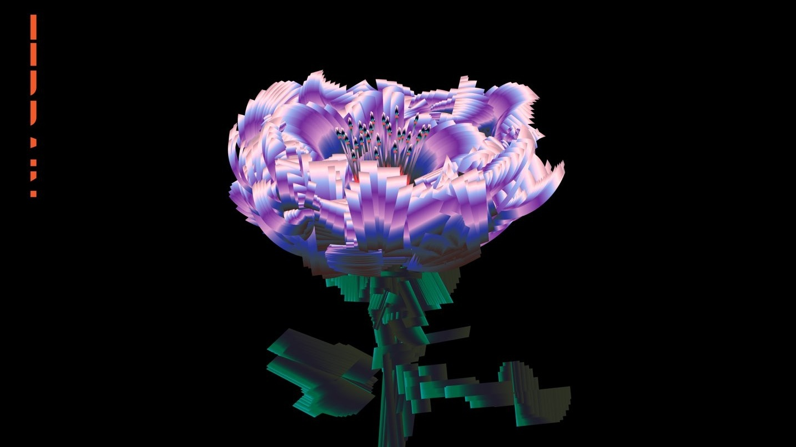
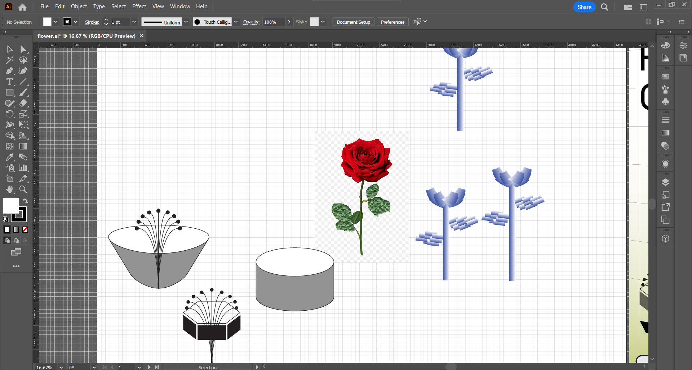
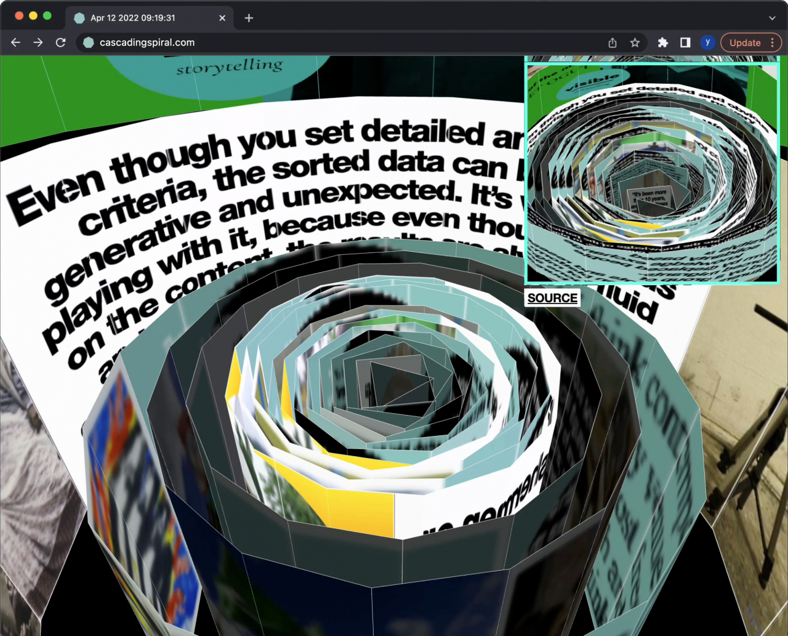

Welcome to the Week 2 window! This is a draggable window.
Designing Wireframes

I started off with a sketch of 8 wireframes - some quick sketches were a bit more conventional website design, with text on the left and images or videos on the right, or others following a standard grid. Other wireframes that I eventually gravitated towards led to more interesting ideas, such as the "mind map" design where the different elements would be linked together like a mind map, or one that looks like scattered pages of paper, where the text and elements would be slanted to the angle of the paper.

Eventually I went with one where all the different elements would be grouped into "flowers" like a flower garden, with the idea of having thumbnails of images to form the shape of flower petals with the leaves to open up some sort of popup window for that week's content. Other ideas of the website that I would like to develop is a way to animate the different flowers when you hover over each week, perhaps a slight wiggle animation or have the flowers to be growing. I also designed it so that the flowers line up in a timeline for all the different weeks and have you scroll horizontally over the timeline. I was suggested to create assets for the flowers with Illustrator and to look into absolute position within the css so that I could place buttons that could open up a window when the flower images are clicked.
Designing Flower Assets

I thought it would be a cool idea to play around with a design in which I try to make the flower garden to look more digital than it does natural, given that it is a "flower garden" that purely exists on the web. I was initially inspired by David Rudnick's flower nfts as well as Lena Weber's flower animations.

I initially tried creating the flower with a series of gradients overlayed onto each other, but wasn't satisfied with the outcome. I eventually tried simplyfying it the next iteration, but ended up ditching more of the gradient idea with something more flat and "wireframe" like - I was particularly inspired by the design of Yehwan Song's cascading spiral project, and thought it would be a cool idea to have the sides of the flower petals be thumnails of the images within the window.


I made a quick mockup of what I wanted my site to look like on Illustrator with the final flower assets i designed. I thought it would be cool if I could possibly make the popup window warped to a different perspective to play around with 3d perspectives.